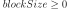
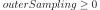

ExpectationSimulationResult¶
-
class
ExpectationSimulationResult(*args)¶ Expectation simulation result.
Gathers the results of a
ExpectationSimulationAlgorithmalgorithm.See also
Methods
getBlockSize()Accessor to the block size. getClassName()Accessor to the object’s name. getCoefficientOfVariation()Accessor to the expectation distribution. getExpectationDistribution()Accessor to the expectation distribution. getExpectationEstimate()Accessor to the expectation estimate. getId()Accessor to the object’s id. getName()Accessor to the object’s name. getOuterSampling()Accessor to the outer sampling. getRandomVector()Accessor to the random variable. getShadowedId()Accessor to the object’s shadowed id. getStandardDeviation()Accessor to the expectation distribution. getVarianceEstimate()Accessor to the variance estimate. getVisibility()Accessor to the object’s visibility state. hasName()Test if the object is named. hasVisibleName()Test if the object has a distinguishable name. setBlockSize(blockSize)Accessor to the block size. setExpectationEstimate(expectationEstimate)Accessor to the expectation estimate. setName(name)Accessor to the object’s name. setOuterSampling(outerSampling)Accessor to the outer sampling. setRandomVector(randomVector)Accessor to the random variable. setShadowedId(id)Accessor to the object’s shadowed id. setVarianceEstimate(varianceEstimate)Accessor to the variance estimate. setVisibility(visible)Accessor to the object’s visibility state. -
__init__(*args)¶ Initialize self. See help(type(self)) for accurate signature.
-
getBlockSize()¶ Accessor to the block size.
Returns: - blockSize : int
Number of terms in the probability simulation estimator grouped together.
-
getClassName()¶ Accessor to the object’s name.
Returns: - class_name : str
The object class name (object.__class__.__name__).
-
getCoefficientOfVariation()¶ Accessor to the expectation distribution.
Returns: - coefficientOfVariation :
Point Coefficient of variation.
- coefficientOfVariation :
-
getExpectationDistribution()¶ Accessor to the expectation distribution.
Returns: - expectationEstimate :
Distribution Distribution of the expectation.
- expectationEstimate :
-
getExpectationEstimate()¶ Accessor to the expectation estimate.
Returns: - expectationEstimate :
Point Estimate of the expectation.
- expectationEstimate :
-
getId()¶ Accessor to the object’s id.
Returns: - id : int
Internal unique identifier.
-
getName()¶ Accessor to the object’s name.
Returns: - name : str
The name of the object.
-
getOuterSampling()¶ Accessor to the outer sampling.
Returns: - outerSampling : int
Number of groups of terms in the probability simulation estimator.
-
getRandomVector()¶ Accessor to the random variable.
Returns: - event :
RandomVector Random variable we want to study.
- event :
-
getShadowedId()¶ Accessor to the object’s shadowed id.
Returns: - id : int
Internal unique identifier.
-
getStandardDeviation()¶ Accessor to the expectation distribution.
Returns: - standardDeviation :
Point Standard deviation.
- standardDeviation :
-
getVarianceEstimate()¶ Accessor to the variance estimate.
Returns: - expectationEstimate :
Point Estimate of the variance.
- expectationEstimate :
-
getVisibility()¶ Accessor to the object’s visibility state.
Returns: - visible : bool
Visibility flag.
-
hasName()¶ Test if the object is named.
Returns: - hasName : bool
True if the name is not empty.
-
hasVisibleName()¶ Test if the object has a distinguishable name.
Returns: - hasVisibleName : bool
True if the name is not empty and not the default one.
-
setBlockSize(blockSize)¶ Accessor to the block size.
Parameters: - blockSize : int, 
Number of terms in the probability simulation estimator grouped together.
-
setExpectationEstimate(expectationEstimate)¶ Accessor to the expectation estimate.
Parameters: - expectationEstimate :
Point Estimate of the expectation.
- expectationEstimate :
-
setName(name)¶ Accessor to the object’s name.
Parameters: - name : str
The name of the object.
-
setOuterSampling(outerSampling)¶ Accessor to the outer sampling.
Parameters: - outerSampling : int, 
Number of groups of terms in the probability simulation estimator.
-
setRandomVector(randomVector)¶ Accessor to the random variable.
Parameters: - event :
RandomVector Random variable we want to study.
- event :
-
setShadowedId(id)¶ Accessor to the object’s shadowed id.
Parameters: - id : int
Internal unique identifier.
-
setVarianceEstimate(varianceEstimate)¶ Accessor to the variance estimate.
Parameters: - expectationEstimate :
Point Estimate of the variance.
- expectationEstimate :
-
setVisibility(visible)¶ Accessor to the object’s visibility state.
Parameters: - visible : bool
Visibility flag.
-